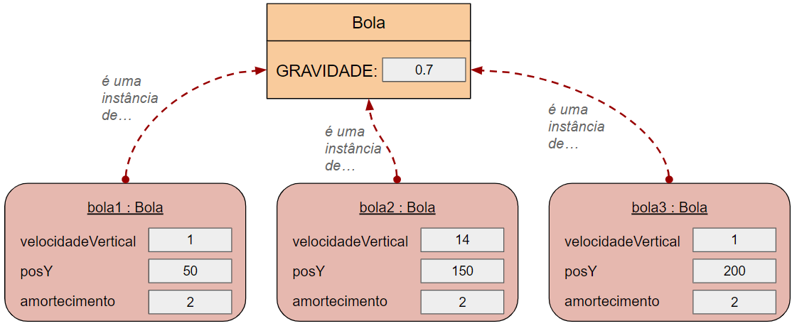

IPOO - Cap. 5 Comportamento Mais Sofisticado
Aula 5.2 - Teórica
DAC - ICET - Universidade Federal de Lavras
26/09/2026
Escrevendo documentação de classes
Quando estamos trabalhando em nossos projetos,
é importante escrevermos a documentação de nossas classes, à medida que desenvolvemos o código.
Muitas vezes programadores não levam a sério a documentação, o que pode levar a sérios problemas.
Se você não fornecer documentação suficiente, pode ser difícil para outro programador entender suas classes.
- Muitas vezes esse outro programador pode ser você mesmo :)
Sem documentação, precisamos ler o código da classe para tentar entender como ela funciona.
- Isso pode funcionar em um projeto pequeno de estudante.
- Mas cria problemas em projetos do mundo real.
É muito comum que sistemas comerciais tenham centenas de milhares de linhas de código.
- Imagine que você tivesse que ler todas essas linhas para entender como o código funciona.
- Seria impossível!
É possível usar as classes da biblioteca Java, como HashSet e Random, olhando apenas a documentação delas.
- Nós nunca precisamos olhar o código-fonte destas classes.
Isso funciona porque as classes estão suficientemente bem documentadas.
- Seria muito mais difícil usar essas classes, se precisássemos ler e entender o código-fonte delas primeiro.
Em uma equipe de desenvolvimento de software, a implementação das classes é geralmente dividida entre vários programadores.
- Um programador poderia implementar a classe
SistemaDeSuporte, por exemplo, e outro a classeLeitorDeEntrada. - Portanto, você pode precisar implementar uma classe enquanto chama métodos de outras classes.
Assim, o mesmo raciocínio usado para as classes da biblioteca Java vale para as classes que você escreve.
- Se podemos usar as classes sem ter que ler e entender toda a implementação, nossa tarefa fica mais fácil.
- Nós precisamos apenas da interface das classes e não da implementação.
Portanto, precisamos escrever boa documentação de classes também para as nossas próprias classes.
A documentação das classes pode ser útil inclusive para as ferramentas de IA.
- Que podem usá-la para complementar o entedimento do código.
Conceito
A documentação de uma classe deve ser detalhada o suficiente para que outros programadores consigam usar a classe sem precisar ler o código fonte.
O Java tem uma ferramenta chamada javadoc que gera documentação a partir de comentários no código.
- Toda a documentação oficial das classes da biblioteca Java é gerada com o javadoc.
O BlueJ usa o javadoc para gerar documentação das classes.
Com o código de uma classe aberto no BlueJ, podemos acessar a caixa de opções no canto superior direito e mudar de código-fonte para documentação.
Ou podemos também usar o menu
Ferramentas→Documentaçao do Projetopara gerar a documentação de todas as classes do projeto.
Exercício
Experimente acessar a documentação da classe SistemaDeSuporte no BlueJ.
Os arquivos HTML gerados ficam em uma pasta doc dentro do projeto e podem ser abertos em qualquer navegador.
A documentação de uma classe deveria incluir, no mínimo:
- O nome da classe.
- Um comentário descrevendo o objetivo e as características da classe.
- Um número de versão.
- O nome do(s) autor(es).
- Documentação para cada construtor e para cada método.
A documentação de todo construtor e método deve incluir, no mínimo:
- O nome do método.
- O tipo de retorno.
- Os nomes e tipos dos parâmetros.
- Uma descrição do objetivo e função do método.
- Uma descrição de cada parâmetro.
- Uma descrição do valor retornado.
Além disso, cada projeto deveria ter um comentário geral sobre o projeto.
- Geralmente dentro de um arquivo
READMEna pasta raiz do projeto. - No BlueJ podemos fazer esse comentário de projeto abrindo o arquivo que fica no canto superior esquerdo do diagrama de classses.
Alguns elementos da documentação podem ser sempre extraídos do código-fonte.
- Como os nomes e parâmetros dos métodos, por exemplo.
- Já a descrição da classe e dos métodos demanda mais atenção já que pode ser facilmente esquecida, ou ficar incompleta.
No Java, comentários Javadoc são escritos com um símbolo especial de comentário.
O comentário deve ter /** no início e */ no final para ser reconhecido como um comentário javadoc.
- Se o comentário vem imediatamente antes da declaração da classe, ele é lido como a descrição da classe.
- Se ele está logo acima de uma assinatura de método, é considerado como um comentário do método.
Como exatamente o comentário deve ser formatado para gerar a documentação pode variar de acordo com as ferramentas de cada linguagem de programação.
No caso do javadoc várias palavras-chave especiais estão disponíveis para formatar a documentação.
- Essas chaves começam com
@, como, por exemplo:@version@author@param@return
Exercício
Encontre exemplos de palavras-chave javadoc no projeto do sistema de suporte e verifique como eles influenciam a formatação da documentação.
Experimente fazer alterações e conferir o resultado na documentação gerada.
Exercício
Documente adequadamente as classes do projeto de suporte técnico e gere a documentação usando o BlueJ.
Encapsulamento
Público vs. Privado
Vocês já notaram que usamos a todo momento as palavras-chave public e private em nossos programas em Java, como mostrado no exemplo abaixo:
Chegou a hora de entendermos para que essas palavras-chaves servem.
Nós chamamos essas palavras-chave de modificadores de acesso.
- elas definem a visibilidade de atributos, construtores e métodos.
Se um método, por exemplo, é público:
- Ele pode ser chamado de dentro da mesma classe e também a partir de outra classe.
Já métodos privados, por outro lado,
- Só podem ser chamados de dentro da mesma classe onde foram declarados.
- Eles não são visíveis para as outras classes.
Como agora já conhecemos os conceitos de interface e implementação fica mais fácil entendermos o objetivo dessas palavras-chave.
Lembre-se que a interface de uma classe é o conjunto de detalhes que um programador que vai usar a classe precisa ver.
- Ela fornece informações sobre como usar a classe.
- E inclui assinaturas e comentários de construtores e métodos.
- Nós também dizemos que a interface é a parte pública da classe.
- Seu objetivo é definir o que a classe faz.
Já a implementação é a parte da classe que define precisamente como a classe funciona.
- Os corpos dos métodos, contendo comandos Java, e muitos atributos são parte da implementação.
- Nós também podemos dizer que ela é a parte privada da classe.
- Quem usa a classe não precisa conhecer a implementação.
- Inclusive, há boas razões para que o programador não possa fazer uso desse conhecimento (como veremos mais adiante).
Portanto, podemos dizer que:
- A palavra-chave
publicdeclara que um membro (atributo ou método) de uma classe faz parte de sua interface.- Ou seja, é visível publicamente.
- Já a palavra-chave
privatedeclara que um membro é parte da implementação.- Ou seja, está escondida de acesso externo.
Conceito
Modificadores de acesso definem a visibilidade de um atributo, construtor ou método. Elementos públicos são acessíveis de dentro da classe e a partir de outras classes; já elementos privados são acessíveis somente de dentro da mesma classe.
Encapsulamento
Em muitas linguagens OO, a implementação de uma classe (seus detalhes internos) é ocultada de outras classes.
Isso tem a ver com duas questões.
- Ao usar uma classe um programador não deveria precisar conhecer seus detalhes internos.
- Isso tem a ver com a modularização e abstração que já discutimos antes.
- Se fosse necessário saber os detalhes de todas as classes, seria impossível desenvolver grandes sistemas.
- Outra questão é que, ao usar uma classe, um programador não deveria ter permissão de conhecer seus detalhes internos.
- Apesar de também ter a ver com modularização, a ideia aqui é que a linguagem não deveria permitir o acesso à parte privada de uma classe a partir de comandos em outras classes.
- Isso garante que uma classe não dependa de como exatamente uma outra classe está implementada.
Esta última questão é muito importante para a manutenção de sistemas.
- Quando precisamos incluir novas funcionalidades ou corrigir bugs é muito comum precisarmos alterar uma classe.
- O ideal é que a alteração de uma classe não provoque alterações em outras classes.
- Isso tem a ver com o que chamamos de acoplamento.
Isso tem a ver com o que chamamos de acoplamento.
- Se a alteração em uma classe não provoca alterações em outras classes, temos um baixo acoplamento.
- E isso é muito bom, porque torna o trabalho de manutenção muito mais fácil.
- Já que em vez de entender e alterar várias classes, o programador precisa trabalhar em apenas em uma.
Suponha, por exemplo, que a equipe que mantém a linguagem Java faça uma melhoria na implementação da classe ArrayList.
- O ideal é que essa melhoria não afete os nossos códigos que usam a classe
ArrayList. - Repare que isso só é possível porque nosso código não faz referência à implementação da classe
ArrayList.
Para ficar mais claro, quando uma classe A utiliza um objeto de uma classe B.
- Não é bem o programador que não pode conhecer a parte interna (implementação) da classe B.
- Na verdade é a classe A que não pode conhecer (ou seja, depender) dos detalhes internos da classe B.
- Repare que pode acontecer do mesmo programador implementar tanto a classe A quanto a classe B.
- Mas de toda forma, as classes ainda deveriam ter baixo acoplamento.
Esta questão de acoplamento é tão importante que vamos discuti-la, em detalhes, no Capítulo 7.
- Por enquanto, o mais importante é entender que a palavra-chave
privategarante o princípio da ocultação de informações- ao impedir que outras classes acessem a parte privada da classe.
- Isso garante o baixo acoplamento, tornando a aplicação mais modular e facilitando a manutenção.
Nós também podemos chamar o princípio da ocultação de informações de encapsulamento.
- Esse conceito é fundamental na Programação Orientada a Objetos.
- E talvez seja a única parte do livro que não gosto muito, pois acho que ele não dá a ênfase necessária a esse conceito.
O termo encapsulamento vem da palavra cápsula, que é definida no dicionário como:
A ideia é que a implementação da classe (seus detalhes internos) sejam encapsulados (protegidos).
- E a classe exponha apenas sua interface.
Um bom exemplo que ilustra o encapsulamento é um telefone fixo comum.
- Você usa o telefone através de sua interface (os botões) e não precisa saber como é o funcionamento interno.
A mesma analogia pode ser feita com um caixa eletrônico.
- Você usa as opções que aparecem pra você (interface) mas não precisa saber como isso funciona internamente.
- Você só vê o que a interface disponibiliza.
Métodos privados
Muitos dos métodos que vimos até agora eram públicos.
- Isso garante que eles podem ser chamados a partir de outras classes.
- Mas podemos também ter métodos privados.
- Como os métodos
imprimirBoasVindaseimprimirDespedidada classeSistemaDeSuporte.
- Como os métodos
Nós declaramos um método como público para fornecer operações para quem usa a classe.
- E declaramos como privado para dividir o código em trechos menores, facilitando o entendimento e a leitura.
- Veja que não faria sentido chamar o método
imprimirBoasVindasde fora da classeSistemaDeSuporte. - Mas o código do método
iniciarfica mais claro quando separamos sua tarefa em subtarefas.
- Veja que não faria sentido chamar o método
Métodos privados
Nós também usamos métodos privados quando um trecho de código é usado em mais de um lugar na classe.
- Pois, dessa forma, evitamos escrever o mesmo trecho de código mais de uma vez.
- E, em vez disso, chamamos o método privado em mais de um lugar.
Atributos sempre privados!
A linguagem Java permite que atributos sejam declarados como privados ou públicos.
- Mas você deve ter notado que nos exemplos sempre declaramos os atributos como privados.
- Isso é fundamental para respeitar o conceito de encapsulamento.
Declarar atributos públicos quebra o princípio da ocultação das informações.
- Portanto, mesmo que a linguagem Java permita atributos públicos, isso é considerado um estilo ruim de programação.
- Há linguagens que nem permitem a existência de atributos públicos.
- Enquanto outras não implementam completamente o conceito de encapsulamento, o que viola a teoria de POO.
- Esse é o principal motivo para eu não adotar a linguagem Python na disciplina :)
Outro motivo para manter os atributos privados é permitir que a classe tenha um maior controle sobre o estado dos seus objetos.
- Se o atributo é encapsulado e só é acessível através de métodos de acesso (obter/get) e modificadores (definir/set),
- a classe pode garantir que o atributo nunca tenha um valor inválido ou inconsistente.
Para deixar o conceito mais claro, suponha que uma classe Circulo tenha um atributo chamado diametro.
- E, como o programador faltou às aulas de POO, ele definiu o atributo como público.
- Com isso, qualquer classe consegue acessar e alterar o valor do diâmetro de um círculo.
- Fazendo, por exemplo:
Mas repare que isso abre brecha para a seguinte situação:
O que aconteceria se, por algum erro, o método calcularNovoDiametro retornasse um valor negativo?
- O círculo acabaria ficando com um diâmetro negativo, mas isso não faz sentido.
E como isso poderia ser corrigido?
Além, é claro, de corrigir o método de cálculo, seria uma boa ideia colocar um if antes de alterar o diâmetro:
- Para garantir que o círculo nunca ficasse com valor negativo por algum outro erro.
Mas repare que podem existir diversos trechos de código no programa que alteram o valor do diâmetro.
Mas repare que podem existir diversos trechos de código no programa que alteram o valor do diâmetro.
- E seria necessário colocar essa verificação em todos esses lugares.
E pior, no futuro, quem fizesse algum código novo, também precisaria se lembrar de fazer a verificação.
Outro problema é que tudo isso está acontecendo sem o conhecimento da classe Circulo.
- Mas é ela quem deveria ser responsável por garantir que o estado dos seus objetos é sempre válido.
Vamos comparar com uma versão bem implementada da classe Circulo:
- ela teria o atributo
diametroprivado; - e um método modificador para alterar o diâmetro.
Repare que, com isso, o diâmetro só pode ser alterado através da chamada do método definirDiametro.
- E agora fica mais fácil evitar o problema anterior.
- Pois basta colocarmos a verificação (
if) no métododefinirDiametro. - Não é necessário tratar todos os lugares que chamam o método
definirDiametro.
E, no futuro, em códigos novos, ninguém precisará se lembrar de ter que fazer essa verificação.
Em resumo:
- Atributos deveriam ser sempre privados!
Conceito
Encapsulamento (ou ocultamento de informações) é um princípio que define que os detalhes internos da implementação de uma classe deveriam ser ocultados das outras classes. Isso permite uma melhor modularização de uma aplicação.
Projeto no Greenfoot
Aproveitando o fato de que vamos usar o Greenfoot para o trabalho prático da disciplina,
- usaremos um projeto do Greenfoot para aprender os próximos conceitos de POO.
Aprenderemos sobre:
- Atributos estáticos
- Métodos estáticos
- Constantes
Para começar, baixe o projeto bolas-quicando.
- Vamos aproveitar esse projeto para também conhecer um pouco mais sobre o Greenfoot.
Abra o projeto no Greenfoot.
- Execute o programa e veja o que acontece.
Exercício
Execute o projeto e logo em seguida pause o programa (antes das bolas pararem de quicar). Clique então com o botão direito em uma das bolas.
- Veja que as opções são as mesmas do BlueJ quando clicamos em um objeto na bancada de objetos.
- Você pode clicar em Inspecionar para ver os valores dos atributos.
- E você pode também chamar métodos do objeto.
Exercício
Abra a classe Mundo e veja o código do método prepare. Repare que ele cria duas bolas e depois cria 10 objetos da classe Chao.
Altere o método para que o programa tenha uma terceira bola.
- Crie a bola com diâmetro igual a 30 e posição vertical (y) 150.
- Posicione a bola na posição (300, 150).
Antes de continuarmos, vamos conhecermos alguns métodos diponíveis no Greenfoot que não tínhamos visto no tutorial.
getImage: retorna a imagem usada para o objeto (definida na hora que criamos a classe).getImage().scale: permite mudar o tamanho da imagem do objeto.setLocation: muda a posição do ator no mundo (coordenadas X e Y).isTouching: indica se o ator está colidindo com algum objeto da classe passada.
Agora leia o código da classe Bola e tente entender como ela funciona.
Atributos estáticos e constantes
Ao avaliar o código da classe Bola você viu alguma palavra-chave nova do Java?
- Repare a declaração do atributo
GRAVIDADE.
Exercício
Experimente alterar o valor do atributo GRAVIDADE para 0.4 e 0.9, por exemplo.
Execute o programa para cada alteração e veja o que acontece de diferente.
O atributo GRAVIDADE é declarado da seguinte forma:
Há duas palavras-chave novas nessa declaração:
staticefinal
Atributos estáticos
A palalavra-chave static do Java serve para declarar atributos estáticos.
- Atributos desse tipo são guardados na própria classe, não nos objetos.
- Ele são também chamados de variáveis de classe.
- Isso torna esses atributos muito diferentes dos atributos comuns que vimos até agora.
- Lembrando que os atributos comuns são também chamados de variáveis de instância.
O diagrama abaixo ilustra bem a diferença entre os atributos comuns e estáticos.

Os atributos comuns (velocidadeVertical, posY e amortecimento) são guardados nos objetos:
- Como criamos três objetos, há três espaços na memória para cada um desses atributos.
Já o atributo estático GRAVIDADE é guardado na classe:
- Com isso, existe sempre um único espaço na memória para ele, independente da quantidade de objetos criados.
Os atributos estáticos podem ser acessados normalmente dentro de qualquer método da classe.
- Isso significa que todos os objetos compartilham o mesmo atributo.
- Se um objeto alterar o valor do atributo estático, esse valor será usado para todos os objetos.
- Já que existe um único valor na memória.
Geralmente usamos atributos estáticos quando todos os objetos da classe devem ter o mesmo valor para o atributo.
- Com isso, evitamos desperdiçar memória guardando o mesmo valor repetidas vezes para cada objeto.
Exercício
Como um atributo estático poderia ser usado para contabilizar a quantidade de objetos criados em uma classe?
Por exemplo, como a própria classe Bola poderia contar quantas bolas foram criadas durante o programa?
Constantes
Constantes são parecidas com variáveis,
- mas a diferença é que seus valores não podem ser alterados depois de inicializados.
- Definimos constantes em Java usando a palavra-chave
final.
Suponha, por exemplo, a seguinte declaração de constante:
- Veja que é uma declaração de atributo.
- Mas tem a palavra-chave
finalantes do tipo do atributo.
Obs.: por convenção, escrevemos os nomes das constantes com todas as letras maiúsculas.
Constantes podem ser inicializadas na própria linha da declaração, como no exemplo dado:
- Neste caso, todos os objetos teriam o mesmo valor.
- E, portanto, seria mais intessante que o atributo
TAMANHOfosse estático.
Mas constantes podem ser inicializadas nos construtores em vez de ser na declaração.
- Como isso, cada objeto poderia ter um valor diferente para o atributo
TAMANHO.- Inicializado, por exemplo, a partir de um valor recebido por parâmetro no construtor.
- A ideia seria que o objeto não poderia ter seu tamanho alterado depois de sua criação.
- Nesse caso, não faria sentido declarar o atributo como estático.
É mais comum usarmos constantes quando elas têm o mesmo valor para todos os objetos.
- Portanto, é mais comum ter constantes estáticas, do que como atributos comuns.
- Como é o caso do atributo
GRAVIDADEda classeBola.
Exercício
Repare que o atributo amortecimento da classe Bola é constante, mas não é estático. Com isso, as bolas poderiam ter valores diferentes de amortecimento.
Altere então a classe Bola de forma que o valor do atributo amortecimento seja recebido por parâmetro no construtor. Você precisará, é claro, alterar a criação das bolas na classe Mundo.
Experimente usar valores diferentes para cada bola (ex: 2, 3 e 4). Execute o programa para testar.
O que acontece com bolas que têm maior amortecimento?
Métodos estáticos
Todos os métodos que implementamos até agora são métodos de instância (de objetos).
- Pois eles são chamados usando objetos.
Mas nós podemos também ter métodos que são chamados usando a classe, em vez de objetos.
- São os métodos estáticos.
- Assim como os atributos estáticos, os métodos estáticos pertencem à classe e não aos objetos.
Nós podemos definir métodos estáticos usando a palavra-chave static na assinatura do método.
Suponha, por exemplo, que uma classe Calendario tenha o método estático abaixo:
Podemos encontrar vários exemplos de métodos estáticos na classe Math do Java.
- Ela possui métodos, por exemplo, para encontrar o máximo ou o mínimo entre dois números.
- Ou ainda calcular seno e cosseno, por exemplo.
Repare que esses métodos dependem apenas dos parâmetros passados.
- Eles não dependem de atributos de um possível objeto
Math, ou seja, não dependem do estado de um objeto. - Geralmente é nesses casos que usamos métodos estáticos.
A classe Math do Java possui também exemplos de uso de constantes.
- O valor de
PI, por exemplo, pode ser acessado com o comandoMath.PI. - Repare que estamos acessando o atributo diretamente, usando o nome da classe, em vez de um objeto.
- Da mesma forma que usamos para chamar métodos estáticos.
- Nós conseguimos fazer isso porque PI é declarado como uma constante pública.
Mas não seria uma falha de encapsulamento declarar um atributo público?
- Note que não há falha de encapsulamento em declarar um atributo público, se ele for uma constante.
- Já que não seria possível alterar seu valor de fora da classe.
Você já usou métodos estáticos antes, sem saber.
- Repare como os métodos abaixo são chamados.
Em todas essas chamadas nós usamos o nome da classe Greenfoot para chamar o método.
- Isso porque todos esses métodos são estáticos.
- Todos eles implementam ações que dependem apenas dos parâmetros passados
- (não dependem do estado de um objeto).
Limitações dos métodos estáticos
É importante sabermos que os métodos estáticos (métodos de classe) têm limitações.
- Como eles pertencem à classe e não aos objetos, eles não podem acessar atributos comuns (variáveis de instância).
- Eles podem acessar apenas atributos estáticos (variáveis de classe).
Da mesma forma, métodos estáticos não podem chamar métodos de instância da mesma classe.
- Podem chamar apenas outros métodos estáticos.
Limitações dos métodos estáticos
Por que você acha que essas limitações existem?
- Imagine que um método estático qualquer (vamos chamar de
metodoA), de uma classeClasseXacessasse um atributo comum. - Tente imaginar o que aconteceria se você fizesse uma chamada
ClasseX.metodoA()sem ter criado nenhum objeto da classe.- E se existissem vários objetos da classe?
E o que isso tem a ver com um método estático não poder chamar um método de instância?
Exercício
Altere a declaração do atributo GRAVIDADE da classe Bola de forma que ele não seja mais uma constante. Mas, mantenha a inicialização do atributo na declaração.
Crie um método modificador que permita alterar o valor do atributo.
Execute o programa e pause-o antes das bolas pararem de quicar. Clique em uma das bolas e chame o método que você criou, informando um novo valor para a gravidade.
Continue a execução do programa e repare que acontece. A gravidade foi alterada só para a bola que você chamou o método, ou para todas elas?
Depois que as bolas pararem, pause o programa novamente, e use a opção Inspecionar em cada bola para conferir o valor do atributo GRAVIDADE. (Obs.: na janela de inspeção, use o botão mostrar campos estáticos).